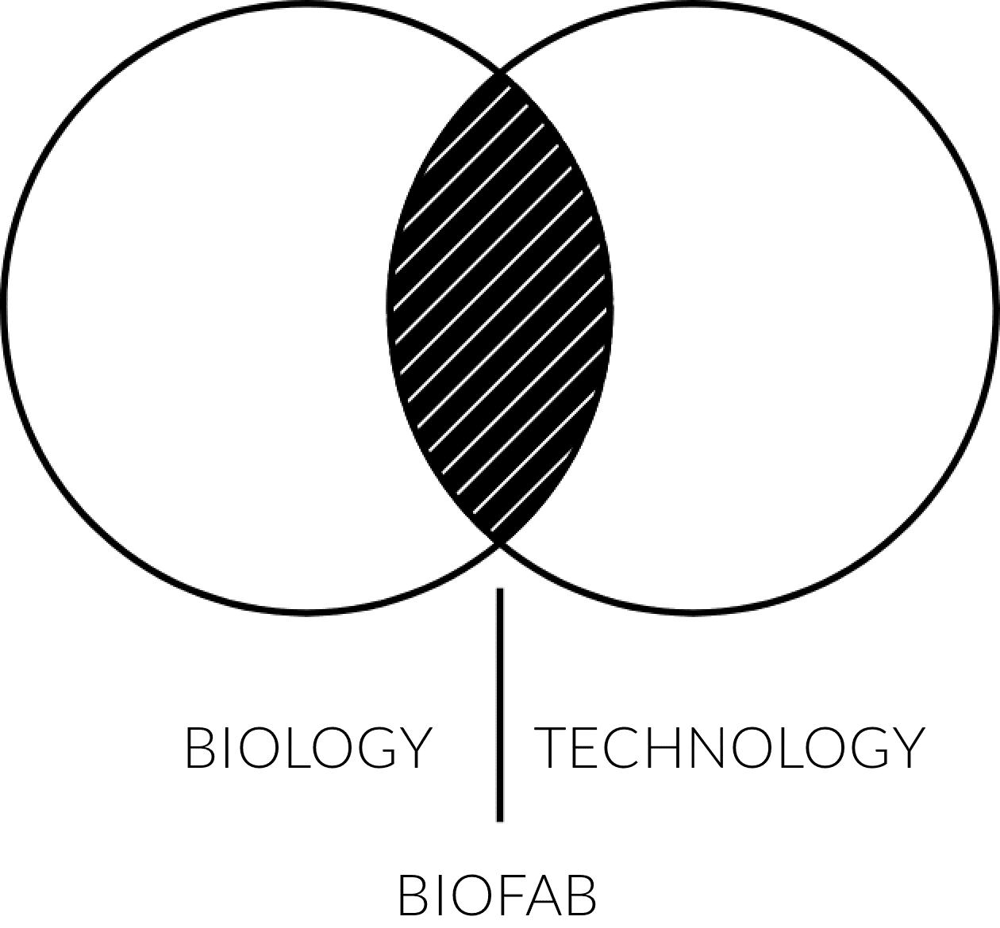

Biological Additive Manufacturing
The next industrial revolution comes from nature. The intersection between biology and technology is creating new fixes for the planet and new opportunities to design with nature, to manufacture with the building blocks of life. We are on the verge of a BioFab revolution that will fundamentally transform the way we humans produce the vast majority of our consumer goods, for example; materials, medicines, clothing, food, etc. In fact, this phenomenon will allow us to manufacture the consumer goods of the future like human organs or organic tissue. BioFabrication consists in using living organism´s metabolic processes as industrial production platforms. Furthermore, by relaying in synthetic biology tools to design recombinant organisms, we will be able to create consumer goods never seen before by mankind. Biology is the most advanced manufacturing technology on the planet and it is perhaps our best ally to create a more sustainable future.
All life forms are processes
Each life form with its own particular metabolism represents a process, we use these processes as industrial production platforms. Traditional industrial production materials such as glass, steel, plastic or wood are about to be replaced by BioMaterials; proteins, carbohydrates and lipids, orchestrated by the nucleic acid guideline. The manufacturing industry is about to be completely transformed by biology. The ability of some living organisms like fungi, bacteria and yeast to secrete proteins, carbohydrates or any other industrial interest molecule, represents a platform for the development of new BioManufacturing processes and the creation of new materials never seen before. This is a complete shift in the way that humans have produced materials for centuries; we are about to go from mining to growing materials for consumer goods production. It is a once in a lifetime opportunity to transcend the traditional exploitation and extraction of natural resources model , to the future model, based on partnering with nature to grow and design our consumer goods; manipulating and controlling living cell's metabolic processes in controlled industrial environments. These BioProcesses are not only ecological, cost-efficient and carbon negative, they also require less land, energy and can even reuse waste from other industries as raw material; encouraging an industrial symbiosis and a circular economy. We can now transform Food Waste into materials, medicines or even food.
The future is not what it used to be